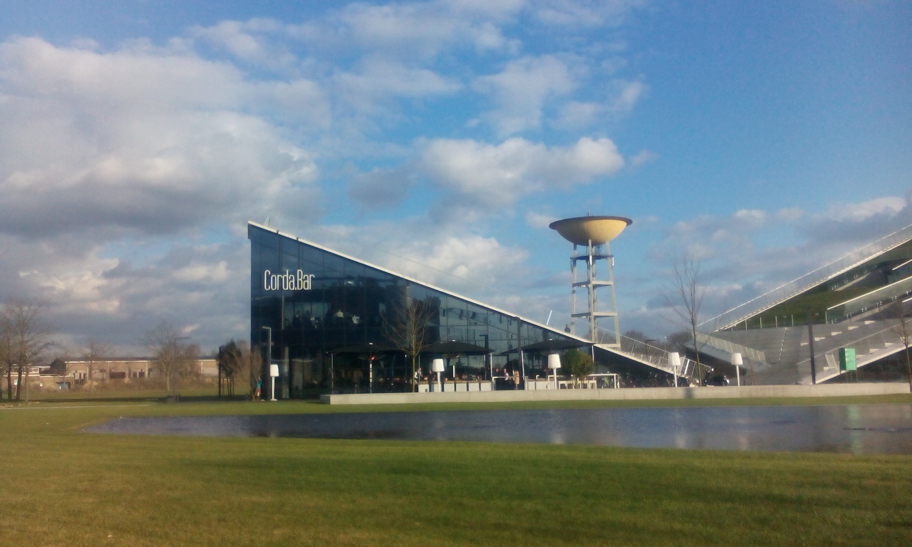

Hallo, welkom op onze portfolio website.
hier vind je alles over de projectweek
Inleiding
In dit portfolio beschrijven we de activiteiten van afgelopen week en blikken hier op terug. Ook gaan we op deze activiteiten reflecteren en op de manier hoe we deze activiteiten hebben behandeld en uitgevoerd.
Omschrijving
Doelstelling van de projectweek
De projectweek had als doel ons voor te bereiden op de complicaties die het werken in groep met zich meebrengen. Als informatici is de kans zeer groot dat we later met anderen moeten samenwerken voor het realiseren van lange termijn projecten. De persoonlijkheden en voorkeuren van deze andere personen zullen ongetwijfeld afwijken van die van ons. Het is dan belangrijk om te leren gaan met conflicten en eventuele ruzies te vermijden. Onze softskills (persoonlijke, emotionele en sociale en intellectuele vaardigheden) werden op de proef gesteld en er werd ons benadrukt hoe belangrijk netwerken is.
Doelstelling van de groep
Leren samenwerken met conflicterende persoonlijkheden, het respecteren van ideëen en het vermijden van mogelijke conflicten. We willen onze soft en hard skills verhogen, netwerken richting de toekomst en vlot samenwerken om tot een goed eindresultaat te komen op I-Talent.
Samenstelling van de groep
Het vormen van de groep opzich ging redelijk vlot. We zaten toevallig al in elkaars buurt bij het invullen van de gekleurde papieren. niemand van ons wist in heb begin precies welke kleur papier we nodig hadden en uiteindelijk bleek dat we hetzelfde zochten. Dan zijn we samen richting de koepel vertrokken en daar bleek dan uiteindelijk ook dat onze thalento uitslagen matchten. Iedereen had zowat zijn eigen functie binnen de groep al opgenomen. Brecht bleek zowat alles wel een beetje te kunnen en vulde de plek als vlinder perfect op. Uit de test bleek ook dat Daan de beste leider zou zijn. Verder werkt Laurens vaak mee op evenementen en festivals en is dus de perfecte materiaalmeester. Sander had uit zijn scouts vergaderingen al ervaring opgedaan over het schrijven van verslagen, de verslaggever die iedereen wel in zijn team wil dus. ten laatste werd Stephen aangesteld als communicatie met derden gezien zijn vlotte omgang en aangename ingesteldheid.
1. Soft skills
Wat we kunnen vaststellen van het werken binnen school is dat je grote projecten niet op je eigen met succes kan afronden. Daarom worden projectgroepen samengesteld. Binnen deze groep wordt een project aangewezen dat volledig moet voldoen aan de eisen en wensen van de klant, want wat je ook doet, de klant primeert. Zodat de werking binnen de groep vlot en soepel verloopt worden er regelmatig teambuilding activiteiten georganiseerd. Hieromtrend werd dan ook een presentatie in de voormiddag gegeven. Na de presentatie in de voormiddag werd ons de opdracht gegeven om een idee te bedenken om geld in te zamelen voor een studiereis van volgende jaar. Wij kwamen tot de conclusie dat een fuif de beste actie was. Wat we onmiddellijk konden zien was dat hier veel meer bij kwam kijken dan dat we eerst dachten. Aangezien Stephen al meerdere keren mee een fuif georganiseerd had, hadden we wel onmiddellijk al veel informatie om mee te starten. In de namiddag was er een quiz gepland die als teambuilding binnen ons team diende. Er werd een combinatie van twee teams gemaakt die uiteindelijk 1 groot team vormde. De verschillende teams werden tegen elkaar opgezet in verschillende vragen rondes zoals algemene kennis rondes tot Disney vragen.
2. Internationalisering
De voordelen van studeren in het buitenland zijn bijna ontelbaar, je kent jezelf niet totdat je alleen je plan moet trekken in een onbekend land. Je leert omgaan met situaties waar je niet bij stil staat wanneer je nog bij je ouders woont, je komt in aanraking met andere talen en culturen plus je perspectief en wereldkennis wordt rijkelijk uitgebreid. Maar wat onze groep toch wel het belangrijkste vond was de impact die erasmus heeft bij het aanwervingsprocess. De gegevens zijn duidelijk hierin; studenten die internationaal gaan, zijn veel geliefder bij de standaard werkgever. Ookal ben je geen avontuurlijk persoon en eerder puur op je studies gericht, internationaal studeren is het in elk geval waard.
3. Professioneel netwerken
Netwerken is in de huidige werkomgeving onmisbaar, er zal altijd een moment in je carrière komen waarin je de hulp van iemand buitenaf nodig hebt. Hierin komen natuurlijk vooraf gemaakte contacten handig van pas. Hoe meer mensen je kent hoe (uiteraard) groter je netwerk, maar wat meeste mensen niet beseffen is dat dit exponentieel vergroot. Elke persoon die jij kent, kent honderden anderen waar je misschien nog niet mee in contact bent gekomen. Dit betekent dat het niet onrealistisch is om een specifieke wens vervuld te krijgen via een vriend zijn vriend (indien je relatie met deze vriend sterk genoeg is). Het is natuurlijk niet zo dat eender welke vriend alles laat vallen om je te helpen, je moet bewijzen dat je voor deze persoon ook iets kan betekenen. Netwerken is zeer functioneel in aarde, “Ik doe iets voor jou als jij iets voor mij doet”. Waar dit voor ons jammer genoeg op neer komt is dat het niet uitmaakt wat je kan, maar wie je kent. Het interessante is dat je eender welke persoon in de wereld kan bereiken in amper 6 tussenstappen, dit noemt de ‘Six degrees of separation’ en werd bewezen al bewezen in 1929. Als we rekening houden met social media zijn meeste mensen al bereikbaar in 2 à 3 stappen, verder bewijzend hoe belangrijk je social media netwerk is. Zo werd er een voorbeeld gegeven om in contact te geraken met de lead zanger van “The Foofighters”. Als we als eerste in contact zouden geraken met de persoon die de seminarie gaf, Ann Beckers, zouden er ongeveer 4 stappen nodig zijn om uiteindelijk in contact te geraken met Dave.
4. Seminaries
De 2de seminarie ging over het werken bij de Federal Computer Crime Unit. De presentatie werd gegeven door Bart Ooms, de hoofdinspecteur bij de FCCU. Hij gaf ons een beeld van hoe een agent binnen de FCCU te werk gaat. Zo zijn de hoofdtaken onder andere voor bijstand zorgen voor onderzoek van ICT systemen en het bestrijden van ICT-criminaliteit. Als IT-student is het mogelijk om na onze studies bij de FCCU te gaan werken. Hiervoor is dan eerst een praktisch en theoretisch ingangsexamen nodig die iedere toekomstige agent moet nemen. Wat een agent bij de FCCU ook nog extra moet doen is onderwijs volgen die je dan opleidt tot een succesvolle FCCU agent, waarbij de opleiding afgesloten wordt met een GIP.
5. Onderzoek
Je moet geen engineer of wetenschapper zijn om in research te gaan. Dat blijkt uit het seminarie van leden van het research departement op de PXL. De meeste personen combineren automatisch het woord “onderzoek” met labjassen, maar research is zo veel breder. Studenten op onze school hebben heel vaak eigenlijk ook geen idee hoe groot het research department is op de PXL, want het bestaat uit bijna 200 medewerkers waarvan er een 50-tal dit fulltime doen. Een aantal speerpunten die aangehaald werden waren concepten zoals mobile development en virtual reality. De meeste onder ons wisten ook al af van de drones waar mee gewerkt wordt op het moment. In de volgende jaren zullen er ook meerdere concepten onderzocht worden of we hier iets mee kunnen gaan doen binnen onze opleiding. Om aan research te doen zijn er een aantal dingen nodig, allereerst geld en een onderwerp. Maar waar vaker niet aan gedacht wordt zijn de competenties. Om aan geld te komen, gaat men vaak naar de overheid, deze zullen je financiëren als je ze kan overtuigen over het onderwerp van je research. Dit wordt dan gedaan met een pitch. Als laatste werd ons dan de opdracht gegeven om een pitch voor te bereiden. Na wat denken kwamen we op het idee van een wekker die je zou wekken gebaseerd op je lesrooster, de tijd die je nodig hebt om te rijden en te wandelen naar je leslokaal, gecombineerd met als er druk verkeer is of niet. Uiteindelijk kwamen we niet in de top 3 in het totaalbeeld, maar eindigde we wel als derde in de klas zelf. Het idee dat als derde eindigde was … (2 I-Talent uren), als tweede eindigde … (5 I-Talent uren) en als eerste eindigde het groepje met het idee over een sensor aan de deur die registraties bijhoudt van patiënten bij thuisverzorging (10 I-Talent uren). (credit video materiaal: Laurens Stieners)
de finale pitches
studie keuze app
bio sensor
broodjes bestellen
mail filter
newsfeed
zorg sensor
les in virtual reality
6. Klantgerichte communicatie
Eén van de seminaries ging over klantgerichte communicatie of met andere woorden: presenteren. Dit werd gegeven door Ann Beckers van AB Training. De seminarie ging over het geven van presentaties op een professioneel niveau. Als je later verder in rangen wilt klimmen bij een bedrijf of je moet je bedrijf gaan vertegenwoordigen dan moet je goede presentatie vaardigheden hebben. Dit houdt in dat je een mogelijke klanten of medewerkers moet kunnen overtuigen over je ideeën. Je moet kunnen inspelen op de wensen van je publiek. Als je een presentatie moet doen is het belangrijk dat je ten alle tijden de aandacht van je publiek moet kunnen houden. Je moet het interessant en overtuigend kunnen uitleggen. De aandacht moet op de persoon die presenteert blijven. Dit wil zeggen dat je niks afleidend op een visueel medium mag zetten (bv. Powerpoint met veel tekst). Er moet altijd een demo worden voorzien voor de klant.
7. Ondernemerschap
Als student hebben we de mogelijkheid om na of zelfs tijdens onze studies een onderneming op te starten. Dit vergt echter heel wat werk en doorzettingsvermogen. Zo werden er op de Corda Campus enkele presentaties gegeven door personen die pas afgestudeerd waren of zelfs nog met hun studies bezig waren. Ook waren er wat oudere personen die door de jaren heen eerst werknemer waren en uiteindelijk tot bedrijfsleider groeiden of een freelancer werden. De weg naar succesvol ondernemen is zeker geen gemakkelijke weg, en dit werd al snel duidelijk. Een innovatief en rendabel idee vinden, de nodige papieren maken (bvb. financieel plan) als je met het idee door gaat etc. is niet simpel als je er niet veel van af weet. Hiervoor dient bvb Voka en Unizo, zij begeleiden je bij het starten van je eigen onderneming. Ook zullen er heel wat tegenslagen zijn. Zo was er een jonge ondernemer aanwezig met een innovatieve app die je in plaats van een review in de vorm van tekst over eten laat schrijven, gewoon een foto laat maken. Hij had een enorm aantal tegenslagen (niet winnen van wedstrijden, tijd -en geldverlies,...), maar is er in het einde bovenop gekomen. Ondanks al dit, je voelt dat je bedrijf in het einde al de moeite waard was, dus werd ons aangeraden als je ooit eens gedacht had aan het opstarten van een onderneming, probeer dit zeker nu dat we nog jong zijn en die risico’s kunnen nemen.
Eindreflectie
Waarom deze bewijsstukken?
Het zijn materialen die wij in de projectweek hebben verzameld. Hieruit is een selectie gemaakt die wij het meest gepast vonden. Zo hebben we de finalisten van de pitches toegevoegd in het onderdeel “Onderzoek”. De groep die wij vonden die het beste was, was inderdaad ook de groep die de jury verkoos. Door de snelle pitch en duidelijke uitleg van de verschillende features trok onze aandacht dan ook veel beter.
Wat hebben we geleerd?
-
-Hoe je een professionele presentatie aan mogelijke klanten moet geven-
- +Aandacht vragen & behouden+
- +interessant uitleggen en aanpassen aan de klant (groep of enkeling)+
- -Welke mogelijkheden je hebt als professionele IT’er om in het onderzoek te gaan-
-
-Dat je met IT bij de politie ook veel mogelijkheden hebt-
- +de mogelijkheden+
- +de opleiding en daarna+
-
-De mogelijkheden die je hebt om te studeren in het buitenland & de buitenlandse stages-
- +Europa (Erasmus), VS (Magellan) of een bilateraal akkoord.+
- -De beste manieren om te netwerken, hoe je je netwerken moet onderhouden.-
- -Samenwerken in groep met nadruk op coöperatie en het vermijden van conflicten.-
- -Hoe het bedrijfsleven van een pas-afgestudeerd student eruit ziet en een aantal stappen die nodig zijn voor het starten van een eigen onderneming.-